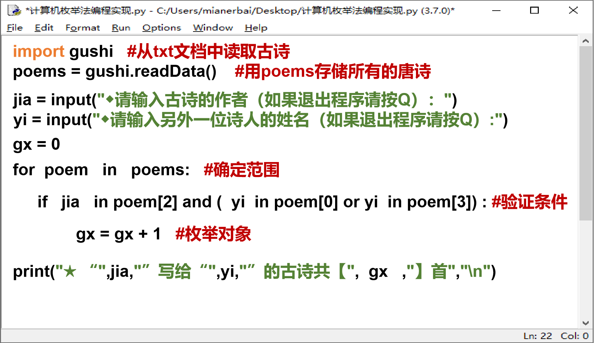

项目：解密唐朝诗人关系
研究目标
提到唐朝诗人，李白和杜甫大家都耳熟能详，那么他们是密友吗？也就是二人都互相“喜欢”吗？杜甫曾在诗中直抒对李白的景仰之情：“白也诗无敌，飘然思不群”，杜甫寄情于李白；但李白却直抒对孟浩然的热爱之情：“吾爱孟夫子，风流天下闻。”；而孟浩然写诗给谁呢？《留别王维》！好吧，那你知道李白和王维是什么关系吗？其他唐朝诗人之间的关系又是怎么样的呢？这节课我们就一起进入“解密唐朝诗人关系”项目中，期望通过编程的方式给大家呈现“别具一格”的研究成果。
具体研究目标为：
- 1. 分析诗人之间关系的查找范围和判断条件，设计问题求解的枚举算法。
- 2. 借助Python编程实现算法，查找诗人之间题诗的数量，并绘制出关系图。
研究准备
- 1. 四人一组，互助合作完成项目。
- 2.安装好Python编程环境，准备好诗词库。
研究过程
要求 从诗词库(data.txt)中找出“杜甫、李白、孟浩然、王维、贺知章”五人间的题诗关系。比比看 2 分钟内哪 组找到的关系最多?
提示
- 1. 在 《data.txt》 文件中可以通过快捷键 Ctrl + F 打开“查找对话框” ，如图 2 所示;然后将杜 甫所有诗句选中复制到新文件(【文件】→【新建】)中，再依次查找李白
- 2. 为了提高效率，各组长要合理安排成员的分工，进行团队合作。
第一步：查找诗人关系(可参考后面的提示操作)，填写下表
| 检验关系 | 关系分析 | |||
| 作者 | 题目 | 诗句 | ||
| 杜甫@李白 | 杜甫 | 《春日忆李白》 | ☑有关系 □无关系 | |
| 《饮中八仙歌》 | 李白一斗诗百篇 | |||
| 赠诗数量 | ||||
| _____首 | ||||
【该步骤省略不做】第二步：根据表中的关系分析，绘制诗人关系图
要求 结合项目问题中枚举算法设计的流程图，从“枚举范围”、“验证条件”、“枚举对象”等方面对指定程序 进行完善(可以两人一组互助完成)，实现查找诗人关系并显示题诗数量。
提示
- 1. 打开程序文件:右键单击文件“查找诗人关系 v1.0.x.py”，选择 Edit with IDEL 命令打开文件。
- 2. 完善程序文件:结合枚举算法设计，对照图3提示的程序语句功能，选择下列程序语句在程序中填空位置填写程序语句(注意切换英 文输入状态)。
- for poem in poems: #确定范围
- if jia in poem[2] and ( yi in poem[0] or yi in poem[3]) : #验证条件
- gx = gx + 1 #枚举对象

-
3.保存并运行程序:根据程序运行结果，填写下面表格。
诗人甲 → 诗人乙 杜甫 → 李白 李白 → 杜甫 李白 → 孟浩然 孟浩然 → 李白 李白 → 王维 王维 → 李白 题诗数量 完成表格之后，可以查询其他感兴趣诗人之间的题诗数量。
要求 根据程序运行出现的古诗缺漏问题，以及可视化呈现诗人关系的需求，继续修改算法完善程序(每组任选一个任务小组合作完成)
任务一：古诗缺漏:
古代，很多诗人都有别称，诗人之间经常称呼对方的别称。在此，我们从哈佛大学编纂的《中国历代人物专辑 资料库》中查找得到了这些古诗人对应的别称并导入别称库。下面请同学们修改算法，补全代码完善程序功能。
提示
-
1. 诗句遗漏从枚举算法三要素分析，应属于 设计上出现问题(枚举范围/枚举对象/枚举条件)， 请对照算法设计，思考该功能完善的地方应为: 。(填写出对应位置的字母:A/B)

-
2. 【该过程省略，直接运行《学生用》文件夹中的程序“查找诗人关系v2.0.py”】将别名查找代码(下面黄色阴影标注的范围)复制到程序中的对应位置（A或B的位置），注意缩进对齐。
for k, v in alter.alter_names_dict.items(): if jia in poem[2] and yi == k: for i in v: if i in poem[0] or i in poem[3]: gx = gx + 1 - 3. 运行程序，修改活动 2 的表格，统计出正确的诗人题诗数量。
任务 2:古诗数量的可视化:
在活动 2 中，程序运行结果为数值显示，为了让诗人之间的关系表达更加一目了然，我们可以用箭头来表示两 个诗人题诗关系，并以线段的粗细表示题诗数量的多少。
提示
-
1. 1.可视化诗人关系是在枚举出题诗数量 (之前/之中/之后),因此，该功能实现的代码应在 位置。(A/B/C)

-
2. 将可视化诗人关系代码(下面黄色阴影标注的范围)复制到《学生用》文件夹中的程序“查找诗人关系v2.0.py”程序的对应位置。
# 用箭头的粗细表达关系 root = tkinter.Tk() root.geometry('600x200') root.wm_attributes('-topmost',1) columnFont =('微软雅黑',20) titleFont = ('微软雅黑',20,'bold') cv=tkinter.Canvas(root,bg='white',width=500,height=200) cv.create_text((20, 100),text = jia, font = columnFont, fill = 'gray', anchor = 'w', justify = 'left') cv.create_text((250, 100), text = yi, font = columnFont, fill= 'gray', anchor = 'w', justify = 'left') if gx != 0: cv.create_line((80, 100, 240, 100), arrow = 'last', arrowshape = '20 20 3', width = gx, joinstyle = 'bevel') cv.pack() root.mainloop() - 3. 运行程序(如果查看其他诗人之间关系，可关闭窗口再继续输入其他诗人的姓名)，完成活动 1 的填图。
初步研究结论
通过这个项目研究，你有哪些发现和思考?